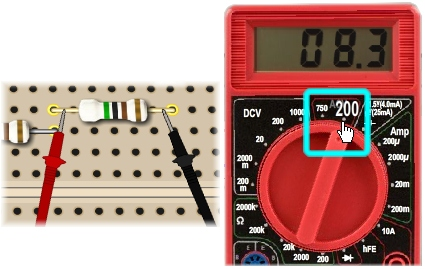
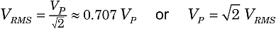
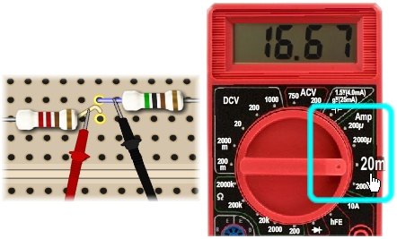

Measuring AC Circuits with a DMM
|  |
|
Figure 1. Measuring AC voltage with DMM |
You know how to use the digital multimeter to measure DC voltage and current. Using the same techniques, the SPARKS DMM can also measure AC voltage and current.
To read AC voltage, turn the DMM knob to one of the ACV (AC voltage) settings (not a DCV setting) and position the DMM probes to measure a voltage drop. Figure 1 shows the SPARKS DMM knob set to the 200 ACV scale and the display reading 8.3 V. To measure voltages greater than 200 V, turn the knob to the 750 scale.
It is important to realize that AC voltmeters read RMS voltage, VRMS which is slightly less than the peak AC voltage, VP.

Figure 2 shows an oscilloscope display, comparing RMS voltage VRMS and peak voltage VP.

|
|
Figure 2. Peak voltage, VP and RMS voltage, VRMS |
AC current
|  |
|
Figure 3. Measuring AC current with DMM |
In a similar way, to read AC current, set the DMM to one of the "Amp" settings and position the DMM probes to measure current. Figure 3 shows the SPARKS DMM knob set to the 20 mA scale, reading a current of 16.67 mA.
As with voltages, the DMM reads RMS current values, IRMS, which are slightly less than the peak AC current values, IP.